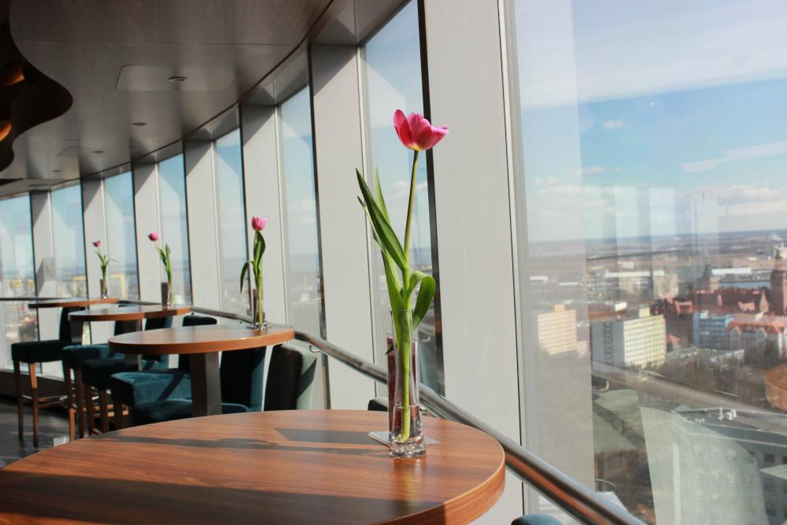

Cafe 22

Panoramiczny widok na całe miasto z 22 piętra, pyszna kawa i domowe wypieki.
Adres: pl. Rodła 8, 70-419 Szczecin
Kontakt: tel. 91 433 44 55



Panoramiczny widok na całe miasto z 22 piętra, pyszna kawa i domowe wypieki.
Adres: pl. Rodła 8, 70-419 Szczecin
Kontakt: tel. 91 433 44 55

Stylowe miejsce z klimatycznym wystrojem, serwujące kawy speciality i lokalne wypieki.
Adres: ul. Krzywoustego 14, 70-250 Szczecin
Kontakt: tel. 91 321 43 21
Klimatyczne miejsce z pyszną, świeżo parzoną kawą oraz z wypiekami idealnymi dla osób wege, więc każdy znajdzie coś dla siebie.
Adres: al. Wojska Polskiego 35/u3, 70-473 Szczecin
Kontakt: e-mail: kontakt@altcoffee.pl
Kawiarnia Fundacji Kota Gacka to świetne miejsce nie tylko dla miłośników kawy i wypieków, ale również kotów, które szukają domów i stanowią miłe towarzystwo przy dobrej kawie.
Adres: ul. Kaszubska 17/u1, 70-402 Szczecin
Kontakt: tel. 506 076 520
Przystań Kawa i wino to kameralne miejsce, które w swojej ofercie ma nie tylko pyszne kawy, ale również różnorodne wina.
Adres: Generała Ludomiła Rayskiego 19, 70-435 Szczecin
Kontakt: tel. 792 053 667
Lavanda to kawiarnia, które oferuje nam przeróżne napoje kawowe o smaku lawendy, idealne dla miłośników tych kwiatów.
Adres: al. Wyzwolenia 2, 70-553 Szczecin
Kontakt: ig: @lavanda.kawiarnia
Jest to kolejne miejsce na mapie Szczecina, gdzie wypijemy pyszną kawę w towarzystwie kotów.
Adres: ul. Śląska 5/1, 70-431 Szczecin
Kontakt: tel. 690 439 222
Klimatyczne miejsce ze świetnymi wypiekami, dla osób, które cenią sobie smak dobrej kawy.
Adres: ul. Stanisława Moniuszki 9, 71-430 Szczecin
Kontakt: tel. 884 167 758
Idealne miejsce na pyszną kawę i dobre lody w gorący dzień.
Adres: al. Bohaterów Warszawy 40, 70-342 Szczecin
Kontakt: ig: @patiocafeturzyn
To miejsce w którym nie tylko wypijesz kawe i zjesz deser, ale także dostaniesz pyszne śniadanie
Adres: Plac Żołnierza Polskiego 3/1, 70-551 Szczecin
Kontakt: tel. 797 259 304